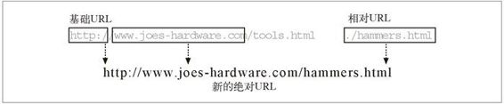
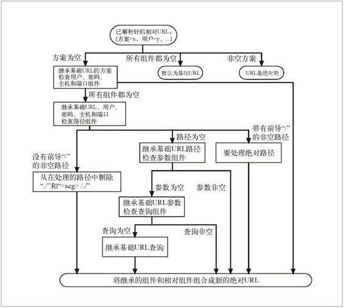

2.3 URL 快捷方式
Web 客户端可以理解并使用几种 URL 快捷方式。相对 URL 是在某资源内部指定一个资源的便捷缩略方式。很多浏览器还支持 URL 的“自动扩展”，也就是用户输入 URL 的一个关键（可记忆的）部分，然后由浏览器将其余部分填充起来。2.3.2 节 对此进行了解释。
2.3.1 相对URL
URL 有两种方：绝对的和相对的。到目前为止，我们只见过绝对URL。绝对 URL 中包含有访问资源所需的全部信息。
另一方面，相对 URL 是不完整的。要从相对 URL 中获取访问资源所需的全部信息，就必须相对于另一个，被称为其基础（base）的 URL 进行解析。
相对 URL 是 URL 的一种便捷缩略记法。如果你手工写过 HTML 的话，可能就会发现相对 URL 是多么便捷了。例 2-1 是一个嵌入了相对 URL 的 HTML 文档实例。
例 2-1 带有相对 URL 的 HTML 代码片段
<HTML>
<HEAD><TITLE>Joe's Tools</TITLE></HEAD>
<BODY>
<H1> Tools Page </H1>
<H2> Hammers <H2>
<P> Joe's Hardware Online has the largest selection of <A HREF="./hammers.html">hammers
</A> on earth.
</BODY>
</HTML>
例 2-1 是资源：
http://www.joes-hardware.com/tools.html
的 HTML 文档。
在这个 HTML 文档中有一个包含了 URL ./hammers.html 的超链接。这个 URL 看起来是不完整的，但实际上是个合法的相对 URL。可以相对于它所在文档的 URL 对其进行解释；在这个例子中，就是相对于 Joe 的五金商店 Web 服务器的资源 /tools.html。
使用缩略形式的相对 URL 语法，HTML 的编写者就可以省略 URL 中的方案、主机和其他一些组件了。这些组件可以从它们所属资源的基础 URL 中推导出来。其他资源的 URL 也可以用这种缩略形式来表示。
在例 2-1 中，基础 URL 为：
http://www.joes-hardware.com/tools.html
用这个 URL 作为基础，可以推导出缺失的信息。我们知道资源名为 ./hammers.html，但并不知道方案或主机名是什么。通过这个基础 URL，可以推导出方案为 http，主机为 www.joes-hardware.com。图 2-4 对此进行了说明。

图 2-4 使用基础 URL
相对 URL 只是 URL 的片段或一小部分。处理 URL 的应用程序（比如浏览器）要能够在相对和绝对 URL 之间进行转换。
还需要注意的是，相对URL为保持一组资源（比如一些HTML页面）的可移植性提供了一种便捷方式 。如果使用的是相对 URL，就可以在搬移一组文档的同时，仍然保持链接的有效性，因为相对 URL 都是相对于新基础进行解释的。这样就可以实现在其他服务器上提供镜像内容之类的功能了。
基础URL
转换处理的第一步就是找到基础 URL。基础 URL 是作为相对 URL 的参考点使用的。可以来自以下几个不同的地方。
在资源中显式提供
有些资源会显式地指定基础 URL。比如，HTML 文档中可能会包含一个定义了基础 URL 的 HTML 标记 <BASE>，通过它来转换那个 HTML 文档中的所有相对 URL。
封装资源的基础 URL
如果在一个没有显式指定基础 URL 的资源中发现了一个相对 URL，如例 2-1 所示，可以将它所属资源的 URL 作为基础（如例中所示）。
没有基础 URL
在某些情况下，没有基础 URL。这通常意味着你有一个相对 URL；但有时可能只是一个不完整或损坏了的 URL。
解析相对引用
前面我们介绍了 URL 的基本组件和语法。要将相对 URL 转换为一个绝对 URL，下一步要做的就是将相对 URL 和基础 URL 划分成组件段。
实际上，这样只是在解析 URL，但这种做法会将其划分成一个个组件，因此通常会称作分解（decomposing）URL。只要将基础和相对 URL 划分成了组件，就可以应用图 2-5 中的算法来完成转换了。

图 2-5 将相对 URL 转换成绝对 URL
这个算法将一个相对 URL 转换成了其绝对模式，之后就可以用它来引用资源了。这个算法最初是在 RFC 1808 中制定的，后来被合并到了 RFC 2396 中。
可以对例 2-1 中的 ./hammers.html 实例使用图 2-5 中描述的算法。
路径为 ./hammers.html，基础 URL 为 http://www.joes-hardware.com/tools.html。
方案为空，沿着图表的左半边向下处理，继承基础 URL 方案（HTTP）。
至少一个组件非空，一直处理到底端，继承主机和端口组件。
将来自相对 URL（路径：./hammers.html）的组件与我们继承来的组件（方案：http，主机：www.joes-hardware.com，端口：80）合并起来，得到新的绝对URL：http://www.joes-hardware.com/hammers.html。
2.3.2 自动扩展URL
有些浏览器会在用户提交 URL 之后，或者在用户输入的时候尝试着自动扩展 URL。这就为用户提供了一条捷径：用户不需要输入完整的 URL，因为浏览器会自动扩展。
这些“自动扩展”特性有以下两种方式。
主机名扩展
在主机名扩展中，只要有些小提示，浏览器通常就可以在没有帮助的情况下，将你输入的主机名扩展为完整的主机名。
比如，如果在地址栏中输入 yahoo，浏览器就会自动在主机名中插入 www. 和 .com，构建出 www.yahoo.com。如果找不到与 yahoo 匹配的站点，有些浏览器会在放弃之前尝试几种扩展形式。浏览器通过这些简单的技巧来节省你的时间，减少找不到的可能。
但是，这些主机名扩展技巧可能会为其他一些 HTTP 应用程序带来问题，比如代理。第 6 章将详细讨论这些问题。
历史扩展
浏览器用来节省用户输入 URL 时间的另一种技巧是，将以前用户访问过的 URL 历史存储起来。当你输入 URL 时，它们就可以将你输入的 URL 与历史记录中 URL 的前缀进行匹配，并提供一些完整的选项供你选择。因此，如果你输入了一个以前访问过的 URL 的开始部分，比如 http://www.joes-，浏览器就可能会建议使用 http://www.joes-hardware.com。然后你就可以选择这个地址，不用输入完整的 URL 了。
注意，与代理共同使用时，URL 自动扩展的行为可能会有所不同。6.5.6 节将对此进行进一步讨论。